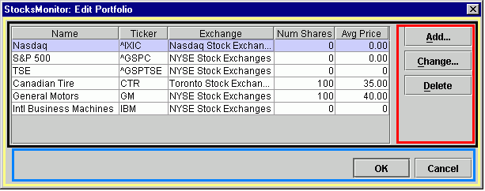
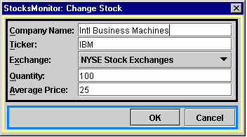

Diálogos Estandarizados
Tareas de utilidad de
Swing
Considere
usar los Formularios de JGoodies para el diseño de pantallas
Most common layouts:
GridBagLayout
- excellent when many components involved
BoxLayout
(and associated Box class) - "glue" and
"struts" (defined in
Box
, not BoxLayout), combined with proper
alignment and equalization of sizes, produce results
pleasing to the eye
BorderLayout
- often suitable for a top level container
FlowLayout
- items can appear on different rows, according to size of
container
GridLayout
- forces all components to be the same size
SpringLayout
- added in JDK 1.4BoxLayout
or
BorderLayout
), and smaller parts use their own layout, completely independent of
the others.
Please see the topic on JGoodies Forms for an interesting alternative to the standard JDK classes for layouts.
Example 1
Here's an example of a dialog box which uses four nested
BoxLayout
objects to arrange its elements. The brightly colored areas
group elements which share the same
BoxLayout
:

Red - (vertical layout) "struts" provide uniform spacing
around each
JButton
, while "glue" takes up the remaining extra space below the
Delete
button
Blue - (horizontal layout) again, struts provide uniform
spacing around each
JButton
, and glue takes up the remaining extra space to the left of the
OK
button.
Black - (horizontal layout) contains the
JTable
and the
Add-Change-Delete
buttons
Yellow - (vertical layout) the top level container for Black and Blue
Yellow and Blue form a standardized
dialog, in which top level layout and the
OK
,
Cancel
buttons are defined by an abstract base class. Concrete
subclasses define both the contents of Black and the action
taken by the
OK
button.
The sizing and alignment of
JButton
objects in
BoxLayout
is not automatic, unfortunately. See Common
utility tasks for these related utility methods :
getCommandRowgetCommandColumnequalizeSizesalignAllX, alignAllYHere's a typical data entry dialog :

Blue - the standardized command row (same as Example 1)
Black - uses
GridBagLayout
. See Common
utility tasks for these utility methods related to
GridBagLayout
and
GridBagConstraints
:
addSimpleEntryField - add a related JLabel
and JTextField to a GridBagLayoutaddSimpleDisplayField - add a pair of
related JLabel objects to a GridBagLayoutgetConstraints - a default set of
constraints, which can be modified as desired